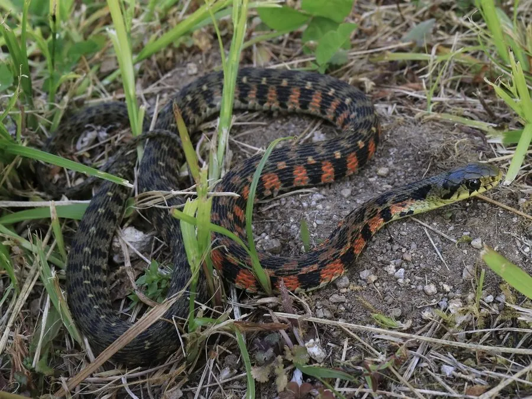

爬行动物 · 动物界
虎斑颈槽蛇 Rhabdophis tigrinus

中国常见的后沟牙毒蛇，体侧有红黑相间的虎斑，颈部腺体能分泌毒液，被咬可能引起出血，须谨慎对待。
- 分类
- 门脊索动物门纲爬行纲目有鳞目科游蛇科属颈槽蛇属
- 栖息环境
- 水田、溪流、草地、灌丛与潮湿的林缘
- 地理分布
- 中国大部分地区及日本、朝鲜半岛、俄罗斯远东
- 保护级别
- IUCN 无危（LC）；中国未列入国家重点保护名录
物种志
虎斑颈槽蛇体长 0.8–1.3 米，身体较细，头部呈椭圆形，颈部有明显的颈腺；体色以橄榄绿或黄绿色为底，身体前段两侧有黑色与橙红色相间的虎斑状横纹，后段斑纹变淡，腹部淡黄绿色。它的花纹醒目，民间称“野鸡脖子”。
它分布于中国大部分地区以及日本、朝鲜半岛和俄罗斯远东，栖息于水田、溪流、草地和灌丛，多在白天活动，捕食蛙类、蟾蜍、鱼类和小型哺乳动物。它是卵生蛇类，雌蛇产卵 6–17 枚，孵化期约 50–70 天。虎斑颈槽蛇属于后沟牙毒蛇，颈部腺体可分泌毒液，毒液可能引起凝血异常，被咬后须及时就医；它性情较温和，一般不会主动攻击人，但不要徒手捕捉或把玩。
形态与习性
- 食性蛙类、蟾蜍、鱼类和小型哺乳动物
- 体长0.8–1.3 m
- 寿命约 10 年
- 繁殖卵生，6–17 枚，孵化 50–70 天
- 活动节律昼行性
- 毒性后沟牙毒蛇，毒液可致凝血异常，被咬须就医
趣味知识
- 虎斑颈槽蛇体侧的红黑虎斑，让它得了“野鸡脖子”的俗称。
- 它的颈部腺体能分泌毒液，属于后沟牙毒蛇。
- 它主要以蟾蜍和蛙类为食，性情温和但不要徒手捕捉。